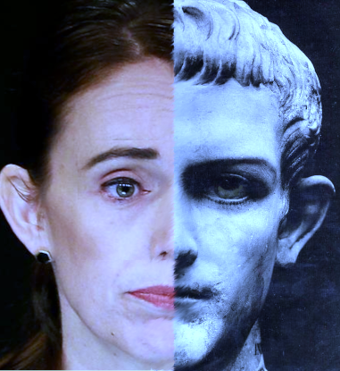

In Recent times there have been many comparisons between Jacinda
Ardern's Labour Government and Stalin's Communism or Germany's
Fascism.
The better comparison is Jacinda Ardern with the Roman Emperor
Caligula.
Caligula was proclaimed emperor by the Senate on 18 March AD 37.
When Caligula entered Rome on 28 March the exuberant crowd hailed
him as "our baby" and "our star". Caligula was described as the
first emperor who was admired by everyone in "all the world, from
the rising to the setting sun."
In the 2020 New Zealand General Election, Jacinda Ardern's Labour
Party won an unprecedented landslide victory. Winning a remarkable
50% of the party vote and a total of 65 out of 120 seats. Making
Jacinda Ardern the first MMP era Prime Minister to be able to
govern alone without the need of a supporting party. For many on
the left it was seen as a new-era in politics, we were to have a
government of kindness and integrity. Jacinda was showered with
congratulations from media all around the world described in terms
such as - "JACINDA Arden has earned respect worldwide for humanity
and competence as an outstanding world leader. Her leadership is a
great example of leadership of unity and peace. Other leaders of
the world have a lot to learn if they want to make this world less
divisive and more united for peace and harmony."
Both Caligula and Jacinda ascended to government with great
promises and hope.
Caligula's first acts were said to be generous in spirit, helping
those who had been harmed by the tax system, granting military
bonuses, and abolishing the treason trials. Within a short period
of time he became one of the most diabolical and heinous leaders
that ever ruled in ancient Rome. Caligula had members of his only
family executed and exiled, spread terrible rumours about other
politicians, and had many of his opponents murdered. Caligula
began appearing in public dressed as various gods and demigods
such as Hercules, Mercury, Venus and Apollo, he even had the heads
removed from various statues of gods located across Rome and
replaced them with his own.
Similarly, Jacinda Ardern's government promised so much: a
solution to our housing problems, open and transparent government,
and a New Zealand without compulsory vaccination or mandates.
Within a short period of time Jacinda Ardern has become the most
diabolical and heinous leader that ever held the role of Prime
Minister in New Zealand. Jacinda Ardern's Labour Party, has
removed the basic rights of citizens and left many citizens in
hopeless and desperate situations. Jacinda Ardern has removed the
right of New Zealanders to return home to their country leaving
many New Zealanders stranded overseas. Jacinda Ardern has set fire
to the New Zealand economy, with companies collapsing daily, and
inflation skyrocketing to levels not seen in a generation. Jacinda
Ardern has created a media slush fund that has lead to a reduction
in critical journalism, as so many media companies are now reliant
on her government funding to survive. Jacinda Ardern has attempted
to divide our country by racial background and by vaccinated and
unvaccinated. Jacinda Ardern has encouraged hatred, lies, and
misinformation at the very heart of our government. Jacinda Ardern
has refused to meet with those who protest against her extreme and
dangerous policies, trying to paint them as feral, unclean,
deranged and unworthy of her god-like presence.
Jacinda Ardern is without doubt the most deluded and dangerous
leader that New Zealand has ever seen, and her continued presence
as Prime Minister will inevitably lead to the destruction of much
of our democracy and freedoms.
Over the coming months this Blog will attempt to hold Jacinda
Ardern and her Labour Party to account telling the story of their
merciless and unrelenting attempts to destroy New Zealand's
democracy. We will draw from multiple sources trying to bring the
news to you.